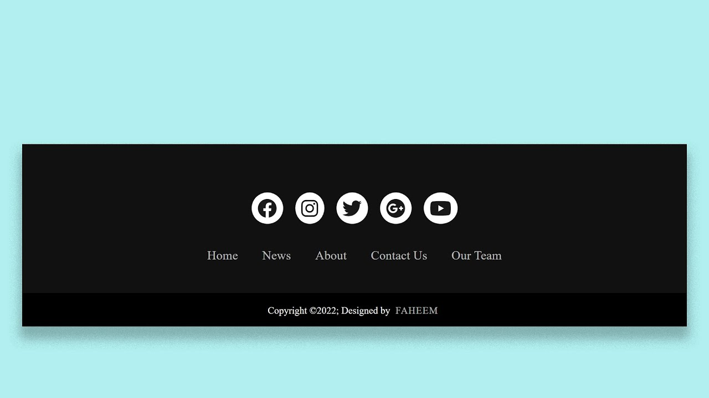

FOOTER
IDEAS CLAVE
- Mayor confiabilidad y presentacion de la pagina web.
- Mayor contenido de informacion adicional para mejorar la experiencia del usuario.
- Excelente accesibilidad y atencion al usuario si se tiene un buen diseño de pie de pagina
NOTAS DE LA CLASE
Footer es una parte importante de cualquier sitio web conocido por varias razones:
- Permite una extension adicional de navegacion, ya que proporciona una oportunidad de incluir enlaces de navegacion que pueda no haberse integrado al menu principal.
- Da mayor credibilidad y confianza ya que si esta bien diseñado y completo, permite transmitir una sensacion de profesionalismo y confianza. Una buena presentacion de informacion adicional y detallada y uno que otro enlace relevante puede generar una ayuda para establecer credibildiad.
- Por ultimo, da una accesibilidad que puede resultar util para usuarios que llegan hasta el final de una pagina y quieren encontrar informacion extra sn tener que volver a scrolear hacia arriba, mejorando la experiencia de usuario.
- Textos Legales
- Cookies
- Redes Sociales
- Copyright / Creditos
- Datos de contacto
- Sellos de confianza
- Sitemaps
- Formularios de suscripción
